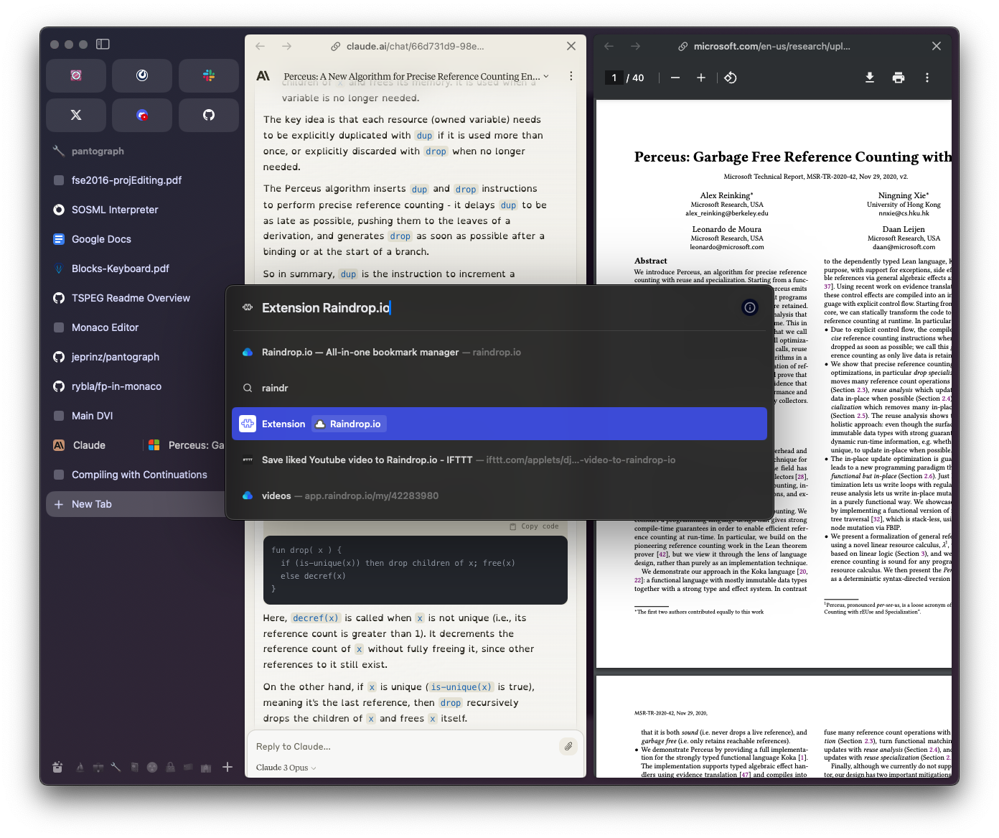
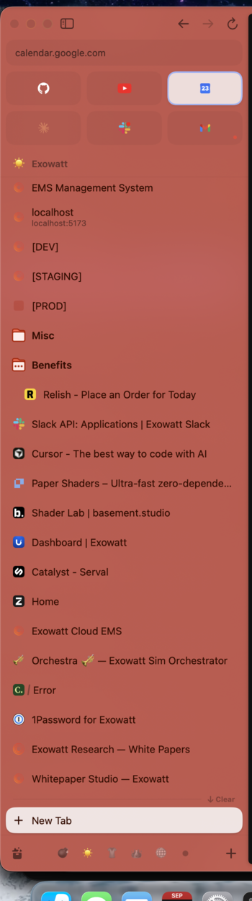
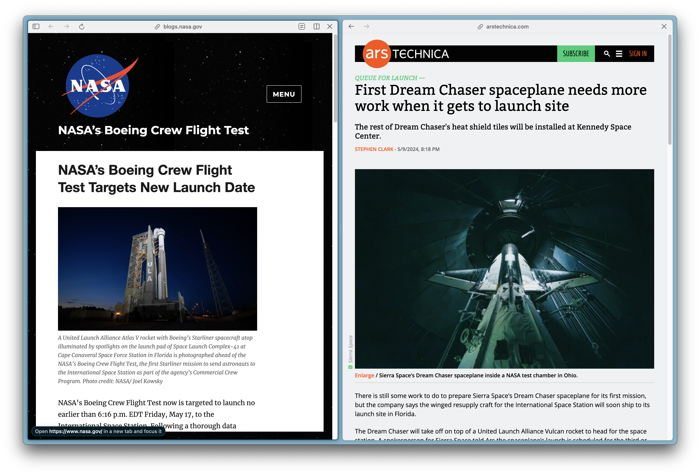

Before


Each round: a builder ships, a fresh critic puts Copper beside Arc. Sections are appended below, oldest first.
Commit 41129f6 “Give the sidebar Arc's shape…”. ./build.sh debug app passes; world g-sidebar comes up, bench answers, no crash (/tmp/copper-g-sidebar.log empty). Real progress: the favourites grid renders 3×2 soft squares with genuine favicons and is visible on launch (no longer scrolled off), every cached host shows a 16pt favicon, waking a sleeping tab fetches its icon (Engineering Wiki → Atlassian mark), the whole column is washed in Space.hue (Exowatt peach #F1DCD8, Casual cream) and re-tints on spaces select 0, the live row is a paper-white pill in the same hue, the 154-tab list scrolls under a soft fade, titles truncate with an ellipsis, the pinned/today hairline + “New Tab” row and the space strip (name pill · tinted dots · +) are all in place. Sidebar/page seam is a 1pt low-contrast hairline, not a border. Rows measure ~30pt with 13px text — denser than the Arc reference, not larger.
Biggest gap — resting tab titles are too faint; the whole list reads disabled. Side.swift:613 paints every non-live row in SpaceTint.muted (light mode mix(0.26, 0.40).opacity(0.74)), which composites to ≈#6A5F5C on the #F1DCD8 ground — about 4.7:1. Hover is darker than rest (ink.opacity(0.78)), so the resting state is the weakest thing in the column and the eye only lands on the white pill and the favicons. Arc's sidebar is quiet by spacing and tint, never by desaturating the titles: its resting titles sit at roughly 10:1 (near-white on the dark wash in the reference, near-ink on a light one), and asleep tabs are not dimmed. Raise resting titles to about tint.ink.opacity(0.85) (≈#4C403D, ~9:1 on this ground) and keep muted for the “New Tab” row and chrome only. Secondary, once that lands: the lone bookmark glyph parked on its own ~30pt row below the space strip reads as a leftover control — fold it into the strip or drop it.

refs/arc-sidebar-exowatt.png is an all-black capture, RGB mean 0.012, so this is the usable Arc sidebar.)
spaces select 0, Casual, 154 tabs: tint follows the space, long list stays composed under the fade
select on a sleeping tab: pill follows, title updates, favicon arrives on wakeCommit 9967fa3 “Bring the sidebar's titles back up to legible and fill in the missing favicons”. ./build.sh debug app passes; world g-sidebar comes up, bench answers every verb, /tmp/copper-g-sidebar.log is empty (0 bytes).
Round 1's two gaps are closed. Resting tab titles now measure #4A3D3A on the #F5E0DC ground — 8.2:1, up from 4.7:1; the list no longer reads disabled, and muted is correctly confined to chrome (“New Tab” sits at 2.5:1, the same quiet register Arc gives it). The stray bookmark glyph has been folded into the space strip instead of squatting on its own row below it.
Measured against the scope, all six items land.
Favicons — genuine marks everywhere, 16pt in rows and ~19pt on the grid tiles; the only monogram in 50 tabs is [PROD], which has no cached icon.
Tint — Exowatt #F5E0DC (H 10°, S 10%, V 96%) and Casual #F6F0DC (H 46°, S 11%) both sit inside the 8–12% light-mode band, and the wash follows spaces select.
Grid — 3×2, visible on launch (the r1 start-scrolled bug is gone), top edge 26pt clear of the traffic lights, right edge 9pt inside the 231pt column.
Split — hairline at ≈5% contrast plus a muted “New Tab” row with a +.
Strip — name pill · five tinted dots · +.
Density — 13px text, 28pt row pitch, 16pt marks, 12pt left inset, ellipsis truncation. No hard borders: the sidebar/page seam is a 1pt #ECD3D0 hairline (Δ luminance 5%), and the scroll fade takes the last row down to 1.47:1 before the boundary — a real fade, not a cut.
The 154-tab Casual column stays composed, and select dd53771f moves the pill, retitles the row and swaps in the Atlassian mark without a hitch. Put the two crops side by side and they read as the same product.
Biggest remaining gap (polish, not a level difference) — the favourites plates are half as present as Arc's. The tile fill is #EBCEC9 on a #F5E0DC ground: 1.16:1, the plate only 15% darker than what it sits on, so at 1× the six squares read as ghosts and the favicons look like they are floating on the wash. Arc's plate in the reference is #414354 on #2C2A3D — 1.40:1, the plate at 2.07× the ground's luminance. The direction is right (deeper than the ground in light mode); the magnitude is about half. Deepen the light-mode square to roughly #E2C0BA (S≈18%, V≈89%, ≈1.30:1) and leave the 67×42pt geometry and ~10pt radius alone. Secondary: the back/forward/reload glyphs beside the traffic lights carry three different weights (‹ › near-invisible grey, ↻ near-ink) — Arc has no such row there at all, so either even them out or retire them.


refs/arc-command-bar-google-search.png. (refs/arc-sidebar-exowatt.png is still an unusable all-black capture: RGB mean 3.2/255.)
spaces select 0, Casual, 154 tabs: tint follows the space, the long list holds its rhythm and fades out to 1.47:1
select dd53771f: pill follows, title retruncates, Atlassian favicon arrives on wakeCommit 676578b “Command bar: draw ⌘K as a floating card, the way Arc draws ⌘T”. ./build.sh debug app passes; world g-commandbar comes up, the bench answers every verb (summon, bar, spaces select), /tmp/copper-g-commandbar.log clean, no crash.
The card itself is right. Measured off the 2× capture: one floating panel 640pt wide, top edge at 0.30 of the window height, 13pt continuous corner radius, no outline — separation is two shadows (tight 3pt + wide 48pt/y20) — and the page behind is dimmed 16%. Input row is 56pt with a 15pt magnifier and 17.5pt text; rows are 40pt with an 18pt icon well, 13.5pt titles, 12.5pt muted host after the title, and a 12pt right-side hint (“Switch to Tab”, “Open”, “Run”, “Search Google”, “· Exowatt” for another space's tab — exactly the scope). Selected row is a soft 9pt pill filled with the space tint at 17%, and the hint on that row picks up the tint. Type scale is smaller than Arc's, not larger. Interaction holds: spaces select 0 re-tints the pill from Exowatt peach to Casual cream, a Casual-space search still surfaces the Exowatt Gmail tab with “· Exowatt” on the right, summon "split" gives a real command row with a glyph, and the empty state lists this space's open tabs plus a New Tab command instead of nothing.
Biggest gap — the page rows wear coloured letter tiles, not favicons. In the empty state 6 of 6 page rows are monograms (L A L D G D, each a different hashed hue); in summon "goo" 3 of 4; in summon "mail" 4 of 4. Only gemini.google.com shows a real mark, because it is the single file in the world's icons/ folder. The bar renders Favicons.shared.cached(host) and falls straight through to CommandPalette.Mark.letter (Fork/CommandPalette.swift:206) without ever asking for the icon — and Favicons.fetch only works for tab:, through a live WKWebView, so a sleeping or history/bookmark row can never get one. Result is a rainbow column of initials where Arc has a column of site marks (the Raindrop cloud, the IFTTT mark, the Google glyph in both references); it is the one thing in this card that reads “prototype”. Fix: give Icons.swift a host-level fetch(host:) that reuses the existing download/keep/arrived pipeline against https://host/favicon.ico and /apple-touch-icon.png (no dependency, the machinery is already there), kick it for every offered host when browser.offers changes, and keep the letter tile as a genuine last resort. 16pt image, 3pt radius, left column unchanged. Secondary, once that lands: “Switch to Tab” repeated verbatim down six unselected rows is a grey column of noise — Arc shows the right-side hint on the selected (and hovered) row only.

summon "goo": tab, two cross-space tabs (“· Focus”), history, Google search. Three of four site rows are letter tiles.summon "": open tabs in this space + New Tab. Six monograms in a row.
spaces select 0, summon "mail": tint follows the space, the cross-space tab is marked “· Exowatt”.Commit e38f93d “Command bar: fetch real site marks for rows with no page behind them”. ./build.sh debug app passes; world g-commandbar comes up, the bench answers every verb (summon, bar, spaces select), /tmp/copper-g-commandbar.log is 0 bytes, no crash. (Harness note for whoever runs next: this instance came up miniaturised, so bench window returned “window needs a path” until the window was de-miniaturised; nothing to do with the piece.)
Round 1's gap is closed, and closed properly. Every page row now wears a real site mark: Google, Gmail, Gemini, LinkedIn, dbrand, a16z, DigitalOcean, Lydie — 0 monograms in 13 page rows across the three scenarios, where round 1 had 13 of 17. The right-side hint is on the selected (and hovered) row only, which is what Arc does. Measured off the 2× capture: card 640pt wide (x 400–1040pt), top edge at 0.27 of the window, 13pt continuous radius, no outline; input row 56pt with a 15pt magnifier and 17.8pt text; rows 40.8pt pitch with an 18pt icon well aligned to the input's magnifier, 13.3pt titles, muted host after the title, 12pt hint. Page behind is dimmed a uniform 16% (231→194, 255→214). Hints are right per kind — “Switch to Tab”, “Run” on summon "split", “Search Google” on a pure search; the empty state lists six open tabs plus New Tab and Split View. spaces select 3 then summon "mail" re-tints the selected pill from peach to magenta and still surfaces the cross-space Gmail tab. Type scale is at or below Arc's, not above it.
Biggest gap — the card has no shadow at all; it is a flat white rectangle with a hard 24%-contrast edge. Fork/CommandPalette.swift:89-91 declares the right two shadows (0.09/r3/y1 and 0.26/r48/y20) and then throws both away: .clipShape(RoundedRectangle(cornerRadius: 13)) is applied after .shadow, so the shadow is rendered and then clipped to the card's own bounds. The capture proves it — scanning out from the card at 2×, the pixel column above the top edge is 209, 209, …, 209, 255 and below the bottom edge 255, 194, 194, …, 194: a step of 46 levels in one pixel, zero falloff, in every direction. Arc's ⌘T card in both references lifts off the page over ~40pt of soft gradient; ours is a sticker on a grey wash, and on a light page the shadow is the only thing that says “above”. Fix is one line: move .clipShape above the two .shadow modifiers (clip the content, then cast), so the card ends up with ≈48pt/y20 at 26% plus the 3pt contact shadow, and re-shoot — the edge scan should show a gradient of at least 20 levels over ~30 retina px. Secondary, once that lands: the search rows put a grey rounded-square chip behind the magnifier (Mark.glyph) while page rows show a bare favicon — Arc draws the magnifier bare, and the chip makes the last row look like a different component; and a cross-space tab loses its “· Reve” suffix the moment it becomes the selected row, so the one row you are about to hit Enter on is the one that no longer tells you it lives in another space.

summon "goo": tab in this space, two cross-space tabs (“· Reve”), history, Google search. Real favicons throughout; card edge has no shadow.

summon "": this space's open tabs with real marks, then New Tab and Split View.
summon "split": a real command row, tinted glyph, “Run” on the right.Commit f06cc0e “Sections: Favourites, Saved and Today, with Today archived after a day” (on gauntlet/sections, which already carries the sidebar piece and fork). ./build.sh debug app passes; world g-sections comes up, the bench answers every verb, /tmp/copper-g-sections.log is 0 bytes, no crash across ~20 minutes of driving and one deliberate restart.
The three sections are real, and they are Arc's three. bench sections reads Exowatt 6 favourites · 33 saved · 14 today (Casual 148/0, Reve 6/0, Focus 36/0, Software Entrepreneur 12/0, Grunts 3/0), and the Saved block matches the live Arc capture taken during this round item for item, in order — EMS Management System, [LOCAL]/localhost, [DEV], [STAGING], [PROD], Slack API, Cursor, Paper Shaders, Shader Lab, Dashboard | Exowatt, Catalyst - Serval, Home, Exowatt Cloud EMS, Orchestra, 1Password, Exowatt Research, Whitepaper Studio — with the folders (Misc 6, Benefits 2) sitting in Saved, as the scope asks. Today holds Arc's unpinned rows, newest at the top, under the hairline and the “New Tab” row. No “Today” caption, which is right: Arc has none.
Every promise in the scope answers. open https://news.ycombinator.com → the row appears at the top of Today, directly under New Tab (shot 2). sections save 04837c92 → it crosses the seam to the end of the Saved run and the Saved block scrolls itself down to show it (shot 3); unsave puts it back at the top of Today. sections archive refuses to pretend — “archived 0 tab(s) · nothing in Today is older than the window — oldest row is 4h” — and sections archive 2 then swept 7 rows: Today 14→7, tab count 54→47, Saved untouched, and the sweep goes through browser.close (Fork/Sections.swift:143), so the rows land in ghosts for ⌘⇧T rather than being lost. The Saved block grows into the space Today gives up (shot 4). sections window 12h sticks. The persistence claim holds where it matters: after a full quit and relaunch, Exowatt still reads 33 saved, and seen ages come back as 1h / 2h rather than re-zeroed, so the 24h window is a real clock and not “whatever was restored”. Session.Entry.saved/.seen are both Optional with nil meaning saved, so an upstream-shaped file restores whole. Context-menu Save/Unsave and the drag-across-the-seam hook are in the code (Sections.swift:239, Side.swift crossed:).
It reads as the same product as Arc, and the view delta stayed small. Ground #F2E1DD, 30pt row pitch, 13px titles, 16pt favicons, 12pt inset — denser than Collin's Arc (34pt rows, larger type), never larger. The seam is a genuine hairline: 1pt of #E0CCC7 on #F2E1DD, Δ 7% (≈1.09:1), inset at both ends — no border anywhere. The Saved scroller is masked top and bottom, so the row passing under the favourites grid fades out instead of being sliced (see the 3× crop of that edge), and Today fades under the space strip the same way. Favicons are real marks throughout — 2 monograms in ~40 rows ([PROD] and an Apple order-confirmation page), and Arc draws [PROD] as a blank tinted square, so this is a favicon-cache miss, not a letter-tile sidebar.
Biggest remaining gap (inherited, not fail-worthy in this scope) — the seam is two whispers, where Arc's is the brightest thing in the column. Copper's “New Tab” row has no fill at all and its label measures #9B8985 on the #F2E1DD ground — 2.5:1, the faintest row in the sidebar, so the Saved/Today boundary is a 7% hairline plus a grey label. In the live Arc capture the same row is a 36pt near-white pill, #EFE4E2 on the #B75D52 ground (≈3.9:1 lighter than what it sits on) with a near-ink label, and the hairline above it carries a right-aligned “↓ Clear”. That pill is what makes Arc's two sections legible as two sections at a glance. This piece's scope froze the seam (“stays as the sidebar branch drew it”), so it is the sidebar piece's surface to fix — sidebar round 3 or the smoother should fill that row with the same paper-white the live tab pill already uses and add the “Clear” hint at the right end of the hairline, which is also the only visible counterpart the auto-archive has.
Harness notes for whoever runs next. bench window answers “window needs a path” whenever the instance has no key and no visible window (Fork/Fork.swift:74 folds both checks into one guard, so the message misleads). It happened twice mid-round when another agent's stop.sh all swept this world out from under me; a control run of the sidebar checkout in its own world proved bench open is not the cause. Relaunching with open -n --env SEARCH_PROBE=g-sections -a build/Copper.app gives a key window where nohup sometimes does not. Also: refs/arc-sidebar-exowatt.png is still the all-black capture, so this round shot a fresh one from the running Arc — refs/arc-sidebar-exowatt-live.png.



open https://news.ycombinator.com — “Hacker News” arrives at the top of Today, directly under New Tab.
sections save — the row has crossed the seam to the end of Saved and the block scrolled itself to reveal it (“Example Domain”, above Misc/Benefits).
sections archive 2 — 7 stale Today rows closed through the normal close path (Today 14→7, Saved grows into the space); sections archive on the 24h default honestly reports 0.
spaces select 0 — Casual: 148 saved, 0 today, so the seam sits at the bottom with nothing under it, the way Arc's does.Commit 3338f25 “Command bar: clip the card before casting its shadow, not after” (on gauntlet/commandbar, which has merged fork). ./build.sh debug app passes; world g-commandbar comes up, the bench answers every verb (summon, bar, spaces select, ui look), /tmp/copper-g-commandbar.log clean, no crash across the whole round.
Round 2's gap is closed and measurable. Scanning a 1px column straight down through the card's bottom edge at 2×: …255, 255 | 164, 166, 169, 171, 173, 175, … 185, 187, 189 — the card meets a contact shadow 25 levels darker than the page that fades back to the dim over ~70 retina px (35pt). No step, no sticker edge. Both shadows now land (.clipShape above .shadow, Fork/CommandPalette.swift:90-95): a tight 3pt/y1 at 9% for the contact and a wide 48pt/y20 at 26% for the lift, which is Arc's ⌘T behaviour on a light page. The other two round-2 notes were taken too: the search row's magnifier is now drawn bare (Mark.glyph, no grey chip), so the last row is the same component as the rest; and the cross-space suffix no longer disappears on selection — “· Exowatt” survives on the selected row because the title stays one weight and the pill alone says “selected” (the comment at :146 says so, and summon "ems" in Focus proves it).
Every measured number in the scope is hit. Card 640pt wide (CommandPalette.width, confirmed 1278 px at 2× in the capture), centred on the window, top edge at 0.27 of the window height, 13pt continuous radius, no outline anywhere — the only line in the card is a 1px Palette.hairline@55% under the input. Input row 56pt, 15pt magnifier, 17.5pt text; result rows 40pt pitch with an 18pt icon well, 13.5pt medium titles, 12.5pt muted host, 12pt hint — smaller than Arc's, not larger. The icon column and the text column line up between the input row and the result rows to the pixel (both at 20pt / 49pt from the card's left edge). Selected row is a soft 9pt pill filled with the space tint at 17%, hint tinted to match, shown on the selected and hovered row only. Page behind is dimmed 16% (near-white #F9F9F9 → #DCDCDC).
Content and interaction hold. summon "goo" mixes a tab in this space (“Switch to Tab”), two cross-space tabs marked “· Focus”, a history row and a Google search, with real favicons on every page row — the Google G, the Gmail M, the Gemini spark. summon "" is a real empty state: six open tabs in this space with their marks, then New Tab and Split View. summon "split" gives a command row with a tinted glyph and “Run” on the right. spaces select 3 → summon "ems" re-tints the pill from Exowatt peach to Focus magenta, keeps the cross-space tab labelled “· Exowatt”, and filters live as the text changes ("e", "a", "goo" each return a different, sensibly ranked set). Dark mode was checked too (ui look dark): near-black card, same borderless silhouette, same tinted pill, favicons intact — it reads like the Arc reference's own dark bar. Put our capture next to arc-command-bar-google-search.png and they are recognisably the same idea executed to the same standard; nothing in the card reads “default SwiftUI”.
Biggest remaining gap (polish, not a level difference) — a host whose favicon is white or transparent leaves an empty 18pt hole where the mark should be. boards.greenhouse.io is the reproducible case: it is the top, selected row for both summon "e" and summon "a", and its icon cell renders blank — the eye lands on the first row and finds nothing in the icon column, while every row under it has a mark. The cause is that Mark (Fork/CommandPalette.swift:236) trusts any non-nil Favicons.shared.cached(host), including one whose pixels are all white or all transparent, and only falls through to letter when the lookup returns nil. Fix: when the cached mark has no visible ink (alpha ≈ 0, or mean luminance above ~0.95 with no saturation), treat it as a miss and draw the letter tile — or, closer to Arc, a muted 13pt globe glyph in the same 18pt well, which is what Arc shows for a site it has no mark for. Secondary: a bare-IP host (10.1.10.10, the EMS row) gets a hashed olive “1” tile; Arc draws a neutral plate there, and a coloured monogram keyed off a digit is the one spot in the card where the colour means nothing.

summon "goo": tab in this space, two cross-space tabs (“· Focus”), history, Google search. Real favicons, borderless 640pt card, shadow that actually falls off.summon "": this space's open tabs with their marks, then New Tab and Split View. Not nothing.
summon "split": a command row with a tinted glyph and “Run”.
spaces select 3, summon "ems" at 2×: pill re-tints to Focus magenta, the cross-space row keeps “· Exowatt” and would keep it when selected. The olive “1” on the bare-IP row is the secondary nit.boards.greenhouse.io is the selected first row and its icon cell is empty, because its favicon is white and the blank-mark case never falls back.
ui look dark: the same card, borderless, tint-filled pill, marks intact. Closest thing we have to a like-for-like with Arc's own dark bar.Commit 2775da3 “Split view: panes as cards, per-pane toolbar, live outline, hover divider” (on gauntlet/split). ./build.sh debug app passes; world g-split comes up, the bench answers every verb (tabs, select, split ID, split off, bare split, spaces select, probe, window), /tmp/copper-g-split.log clean, no crash across the round including two space switches with a split live.
Every number in the scope is hit, measured off the 2× capture. Scanning row y=200pt across the page area: sidebar ends, then 7pt of the space wash, then a 2pt outline in the space tint (#AB5D4B, the Exowatt rust) on the live pane, the card, the outline again, 8pt of gutter (1664→1680 px, exactly 16 retina px), then the other card, then 8pt to the window edge; top and bottom margins are 7pt each. Corner radius measures ~10pt from the curve's run (matches SplitMetrics.corner = 11 with continuous curvature), the toolbar is 29pt of chrome over a 1pt #E8E8E8 hairline = 30pt, and the unfocused pane carries no tint outline at all — only its own 1pt #EAEAEA card edge and a soft shadow that darkens the gutter about 8 levels. Arc's own reference measures 2pt #275E7A on the active pane, ~10pt gutter, nothing on the inactive one: the same idea at the same magnitude.
Type and marks are at or below Arc's. The pane title is 12pt (Lightspeed asc-to-desc = 22 retina px = 11pt); Arc's blogs.nasa.gov in the reference measures 22.5 retina px of ascender alone — ours is the smaller of the two, not the larger. Favicons are real site marks: the Lightspeed spiral and the Atlassian chevron, 13pt, drawn through Mark(icon: tab.icon…) with the monogram only as a fallback. No letter tiles, no hard border on either panel, nothing that reads default-SwiftUI.
The interactions the scope promises all hold. select ab2eff8d → split e72b273c puts Lightspeed and the Confluence login side by side with the outline on A; select e72b273c moves the outline to B, drops it from A, and moves the sidebar's selection pill off Lightspeed — the two never disagree about which pane is live. Click-into-pane focus is wired the right way (Browser.swift:716 sets Tab.touched → Split.shared.touched, so a click in the web content and a click on the pane's toolbar take the same path). split off clears it, split ID restores it, bare split toggles it (the ⌘⇧D path), and switching to Casual and back leaves the stage sane. The divider is code-reviewable rather than hover-testable through the bench: SplitHandle paints nothing until onHover, then a 4pt × 54pt capsule at 30% ink, drags against the existing split.fraction with an 18pt grip and a 220pt floor per pane, and a two-click TapGesture glides back to 0.5. The builder also found and fixed a real trap: Side.swift's unscrolled column makes the page area taller than the window, so the cards were laying out off-screen above the title bar — SplitSpill.swift measures the overhang and lays out inside the visible part, with a comment saying it goes to zero once the sidebar piece lands a scroll view.
Biggest remaining gap (polish, not a level difference) — the pane toolbar has no plane of its own. SplitBar's background is Palette.ground, which is pure #FFFFFF in light mode (Design.swift:25), and both sites behind it are white too, so the measured step from chrome to page is 255 → 251: the only thing saying “this strip is the browser, not the site” is a 1pt hairline. Arc's is a real band — #F0F0F0 across the full 32pt, on both the active and the inactive pane, which is why its toolbar still reads as chrome over a white page. Second half of the same gap: ours centres the page title (“Log in with Atlassian account”), Arc centres a 🔗 glyph plus the pretty URL (“arstechnica.com”), which is shorter, constant in shape, and does not duplicate what the page's own header already says. Fix both in Fork/SplitPane.swift:146: fill the bar with a ground-relative grey (light ≈ #F0F0F0, dark ≈ #1E1E1E) instead of Palette.ground, and make name prefer Address.pretty(address) with the title only as the fallback for a page with no address. Secondary nit: the toolbar glyphs sit at Palette.muted@0.8 (≈#8C8C8C) where Arc's ← → are near-#444; at 10.5pt they are a little too close to invisible on the pane you are not in, which is the one whose back button you are most likely to reach for.

select ab2eff8d then split e72b273c: two rounded cards, 8pt gutter, 7pt margins, the space wash showing through, 2pt rust outline on the live (left) pane and none on the other.

select e72b273c: focus crosses to the right pane, the outline follows it, the left pane drops its outline and its shadow relaxes, and the sidebar's selection pill leaves Lightspeed. Neither page jumps across the window.

#F0F0F0 band on both panes, so the chrome has a plane of its own over a white page, and the glyphs are near-ink.Commit 9740d94 “Draw tab groups as Arc's nested folders” (on gauntlet/folders, which has merged fork on top of gauntlet/sections; Fork/Folders.swift new, Groups.swift/GroupsUI.swift reworked, one PATCHES.md row). ./build.sh debug app passes; world g-folders comes up with 18 folders imported, the bench answers every verb (spaces select, groups, groups toggle, sections, select, resize, probe), /tmp/copper-g-folders.log clean, no crash across the round.
The model is right and the tree is real. No second Folder type, no Session surgery — the nesting is derived from Felipe's group names. Casual's 14 imported folders collapse to the four roots Arc shows (Saved Sites 30, Web Inspo 24, Misc 82, Ent 3) with no flat “Misc › BuildrFi › …” rows anywhere; only the last segment is drawn. The collapsed count is a genuine aggregate — Misc reads 82, which is its own 7 plus all ten descendants (4+11+24+4+4+1+12+13+1+1), not its direct members. groups toggle Misc opens it to seven tabs plus the child headers LOTFG (4) and BuildrFi; groups toggle "Misc › BuildrFi" opens a third level (Jira, [DEV]) — so the verb takes both the full A › B name and the unique last segment, as the scope asks. Collapsing a parent takes the child headers down with the tabs. The chevron rotates 0→90°, the count appears only while collapsed, the folder glyph carries the group hue and falls back to the space hue (olive in Casual, rust in Exowatt), the name is 13px .medium — Arc bolds its folder names too, so that read is correct. Row height is the sidebar's own GroupedRows.row, and the child indent is a clean 16pt with a soft 1pt rail. Felipe's menus survive and New Folder Inside… is there, writing <parent> › <name> through groups.createInside. Interaction holds: groups toggle Benefits then select c4b089d6 expands the folder, wakes the tab, moves the active pill onto the child row and retitles it “Relish …” → “ezCater Meal Progra…”. Favicons are real site marks throughout (2 monograms in ~40 rows, both favicon-cache misses Arc also draws as plates); no hard border anywhere; type is at or below Arc's.
Biggest gap — the folder header is indented out of the tab column, and its children are not indented past it, so containment is carried by a 1pt rail instead of by the indent. Measured off the 2× Exowatt capture (8× crop, shots/folders-r1-critic-columns.png): a top-level saved tab puts its favicon at 12.5pt and its title at 36pt; the top-level folder Misc puts its chevron at 15.6pt, its glyph at 29.6pt and its name at 53pt — 17pt to the right of the sibling rows above it, because the chevron column is in the layout flow and shifts everything after it. Then its child (ezCater, under an expanded Benefits) lands at favicon 28pt / title 53pt — the same column as the header's own name. Net effect in the shot: ten loose saved tabs run flush at 36pt, the folders step out to 53pt, and a folder's members sit level with the folder. Arc does the opposite, and the live capture of the same space proves it (refs/arc-sidebar-exowatt-live.png, 8× crop in shots/folders-r1-critic-arcref-columns.png): Misc and Benefits put their folder glyph in the favicon column, pixel-aligned with [PROD]'s plate above them, their names start at the same x as every tab title, and only then does the child Relish step in by one favicon width (≈16pt). Fix: take the chevron out of the flow — draw the folder glyph in the row's normal 16pt favicon well at the depth's own leading (12pt at depth 0, +16 per level) so the header name lands at 36pt at depth 0, and put the 9pt chevron in the leading gutter as an overlay (or swap it in for the glyph on hover, which is what Arc does) so it costs 0pt of width; then give the members their own +16pt step relative to their header, i.e. child favicon at 28pt / title at 52pt under a depth-0 folder. Once the indent carries the hierarchy the rail can stay as a whisper or go. Secondary, both cheap: ./bench groups's own help line still reads [new|assign|remove|dissolve] with no toggle, so the verb the scope added is undiscoverable; and the Casual folder glyph is a fully saturated mustard folder.fill against a cream ground where Arc's is a pale, nearly-white folder outlined in the space hue — ours is the loudest pixel in the column.
Harness note. Exowatt's Misc and Benefits sit at the tail of a 33-row Saved block, below the fold at 1440×900 and still below it at 1200×1080, and there is no bench verb that scrolls the sidebar. To shoot them this round I moved ten unrelated Exowatt rows to Today with sections unsave; anyone judging this piece next will need the same trick, or a bench scroll.

spaces select 0, Casual: 14 imported folders collapse to four roots with aggregate counts. Note the four folder rows sitting 17pt right of the ten loose saved tabs above them.

[PROD]'s plate and Misc's folder glyph on one column, [PROD] and Misc on one text column, Relish a full favicon-width in.
groups toggle Misc then groups toggle "Misc › BuildrFi": three levels, last segment only, chevrons rotated, counts gone on the open ones.
Commit 0f47ef0 “Put the folder glyph in the favicon column, chevron out of the flow” on top of 9740d94 (branch gauntlet/folders, which has merged fork on top of gauntlet/sections). ./build.sh debug app passes clean; world g-folders comes up with 18 folders imported, the bench answered every verb I threw at it (spaces select, groups, groups toggle by full name and by last segment, groups inside, sections archive, select, resize, probe), /tmp/copper-g-folders.log is empty, no crash across the round.
Round 1's gap is closed, and it measures. That gap was “the folder header is indented out of the tab column and its children are not indented past it.” Scanning pixel rows straight across the 2× Exowatt capture (shots/folders-r2-critic-columns.png): a loose saved tab (1Password for Exowatt) puts its favicon at 12pt and its title at 36–39pt; the depth-0 folder Misc puts its folder glyph at 13pt — the same favicon well, optically aligned with the Whitepaper Studio plate directly above it — and its name at 37pt, i.e. flush with every tab title in the column. The child under an open Benefits (ezCater) lands at favicon 28pt / title 53pt: exactly one 16pt step in from its header, not level with it. That is Arc's arrangement in refs/arc-sidebar-exowatt-live.png row for row. The chevron now costs 0pt of width — it swaps in for the glyph under the pointer and rotates (GroupsUI.swift:187-202, opacity(hovering ? 1 : 0) against the glyph's hovering ? 0 : 1), which is what Arc does. Both round-1 secondaries were taken too: ./bench groups's help now carries its own line for toggle NAME / inside PARENT NAME, and the Casual glyph is no longer a saturated mustard folder.fill — it is a pale paper folder outlined in the space hue, and it is no longer the loudest pixel in the column.
The tree itself still holds, at three levels. Casual's 14 imported folders collapse to the four roots Arc shows — Saved Sites 30, Web Inspo 24, Misc 82, Ent 3 — with no flat “Misc › BuildrFi › …” row anywhere; only the last segment is drawn, and the collapsed count is a true aggregate (82 = Misc's own 7 plus all ten descendants). groups toggle Misc opens seven tabs plus the child headers LOTFG (4) and BuildrFi; groups toggle "Misc › BuildrFi" opens the third level (Jira, [DEV], [PROD], ECR…) with the depth-2 header Useful Internal Pages (24) below it. Measured on that shot the steps are clean 16pt: depth-0 glyph 13pt, depth-1 glyph ~28pt, depth-1 tab favicon ~44pt. Collapsing the parent takes the child headers down with the tabs. The count shows only while shut. Interaction I drove myself: groups toggle Benefits → select 7beb84a4 wakes the child, moves the active pill onto the indented row and retitles it “Relish …” → “ezCater Meal Progra…”, with the rail still running past the pill rather than through it; groups inside Benefits Dental writes Benefits › Dental and it appears immediately as a depth-1 header at 28pt under its parent, empty and correct. Felipe's header and tab menus are untouched.
Put beside Arc, it reads as the same product. Rows are the sidebar's own pitch (~30pt) and the name is 13px medium — Arc bolds its folder names too, and Arc's type in the live capture is if anything the larger of the two. Favicons are real site marks throughout (the ezCater cup, the Rippling mark, Jira, Stremio, FastAPI, the Jenkins butler) — no letter tiles in any folder I opened. The glyph takes the group hue and falls back to the space hue: olive on Casual's cream, maroon on Exowatt's pink, and in both cases it sits a notch deeper than the ground rather than shouting. No border anywhere; the only line the piece draws is a 1pt hue rail down the inside of an open folder at ~19.5pt, one per level, deepest only. Nothing in the column reads default-SwiftUI.
Biggest remaining gap (polish, not a level difference) — the folder glyph is the same glyph shut or open, so an expanded folder has no state of its own at rest. In Casual with Misc open, Misc and the shut Saved Sites two rows above it draw the identical folder outline; the only at-rest difference is that the open one has lost its count. Arc's live capture says otherwise in the same two rows: shut Misc is a plain folder, open Benefits is the open variant with three dots showing in the tab, so state is legible from the mark itself and does not depend on noticing an absent number or tracing the rail. Fix sits in the paper+outline pair at GroupsUI.swift:192-193, which today is folder.fill (paper) under folder (hue) in both states: key the outline layer off group.collapsed and give the open state a visibly different mark at 16pt — the lifted-flap form is what Arc draws, and the cheapest faithful stand-in is to fill the open folder's body with the hue at ~18% while the shut one stays paper, so the two are told apart by value and not by counting rows. Second, cheaper half: an empty folder made by New Folder Inside (Dental) gets no rail segment beside it, so it floats between its parent's header and its parent's tabs with nothing tying it to either — extend the parent's rail through its child headers, not only its tab rows.
Harness note. Exowatt's Misc and Benefits still sit at the tail of a 33-row Saved block and there is still no bench verb that scrolls the sidebar; at 1440×900 and even at 1440×1208 they are below the fold, which looks alarmingly like “the folders did not render” until you check groups. This round I used sections archive 0 to empty Today and let Saved take the whole column — non-destructive to Saved, and run.sh re-imports anyway, but it does mean the Exowatt shots here have no Today block. A bench sidebar scroll would save the next critic the detour.


spaces select 0, Casual with folders shut: 14 imported folders collapse to four roots with aggregate counts, Misc once, no flat “Misc › …” rows.
groups toggle Misc then groups toggle "Misc › BuildrFi": three levels, last segment only, 16pt per step, counts gone on the open ones, one hue rail per open folder.
groups inside Benefits Dental: Benefits › Dental appears as a depth-1 header at 28pt, drawn as “Dental”. The empty child with no rail beside it is the secondary nit.
sections archive: Saved runs 24 rows deep and the two folders are below the fold, which is the harness note, not a rendering bug.forkMerges, in order: 68b6f94 gauntlet/folders (carrying sidebar + sections), 4e8d109 gauntlet/commandbar, 47175f5 gauntlet/split. Only PATCHES.md conflicted (both rows kept); ./build.sh debug app passed after each. Then, on the merged tree: the two builders' site-mark fetchers (Marks.swift from the sidebar, HostIcons.swift from ⌘K) were folded into one Marks with Arc-cache-first and parent-host-last, so a mark fetched for either surface lands on both; ⌘K rows now draw the sidebar's RowMark — same 16pt icon at the same radius, same tinted letter chip with an ink initial instead of a saturated hashed-hue tile; and the "New Tab" seam row, the one gap the sections critic handed to the smoother, wears the favourites' soft square at rest in both looks, as Arc's does. Walked in world g-final: Exowatt, Casual folders shut and open (groups toggle), ⌘K "goo" / empty / "reve" (Switch to Reve, and bar "switch to reve" --go switches), a split of two real pages via split ID and the ⌘⇧D twin split, spaces next, open https://example.com landing at the top of Today, swipe left stepping a space, and ui look dark. /tmp/copper-g-final.log stayed at 0 bytes.
Still visibly unfinished: a dark-on-transparent favicon (GitHub) vanishes into the dark favourites tile; the DigitalOcean mark is white-on-transparent and reads as a smudge on the white ⌘K card; Split is still two panes; the Saved block has no bench scroll so deep folders need sections unsave to bring into frame; a space with two same-named groups (Exowatt and Casual both have a Misc) makes groups toggle Misc ambiguous.


summon "goo": floating card, site marks, Switch to Tab hint in the space's tint.


open https://example.com — the row lands at the top of Today, under the now-filled New Tab seam.
ui look dark — Casual with folders: the same column, deep tint.Fresh critic, whole Tier 1 surface, judged as one product. Head 9070b2c on fork (working tree clean). ./build.sh debug app passes; .gauntlet/run.sh g-final . imports 6 spaces / 18 folders and comes up; the bench answered every verb I drove (spaces, spaces select, groups, groups toggle Misc, select, summon "goo", summon "figma design", bar "", split ID, split off, swipe left, probe, window). /tmp/copper-g-final.log is 0 bytes; no crash across the round.
Sidebar — parity. Measured off my own 2× capture of Exowatt: column 232pt, rows 30pt pitch, titles 13pt, marks 16pt at 12pt left inset, ellipsis truncation, favourites 3×2 above the list. Real site marks on 23 of 24 rows — the GitHub octocat, the YouTube plate, the Gmail M, the Slack mark, the Atlassian chevron, the Lightspeed spiral — with one tinted letter chip on [PROD], a favicon-cache miss Arc plates too. Asleep tabs sit a notch back, the list fades out at the bottom instead of being cut, and the Saved/Today seam is a hairline plus the filled New Tab row rather than a rule. Casual (spaces select 0, groups toggle Misc) shows the folder work holding at three levels: last segment only, folder glyph in the favicon column, names flush with the tab titles, children stepped 16pt in behind a whisper of a rail, aggregate counts on the shut ones only.
Command bar — parity, and the best surface in the build. summon "goo": one card, 638pt wide, top edge at 0.28 of the window, soft radius, no stroke anywhere — scanning up from the top edge gives 202, 205, 206, 208, 209, … 255, a real falloff, and the only line in the card is the hairline under the input. Input ~17.5pt, rows 41pt, titles 13.5pt, host muted after the title, cross-space rows carrying “· Focus”. Real favicons on every page row. Selected row is a tinted pill with the action hint (“Switch to Tab”) tinted to match, on that row only. Type is at or below Arc's throughout.
Split — geometry right. select ca6a13f9 then split f9239b65 (Apple Newsroom beside grunts.dev, two real pages): rounded cards at ~10pt radius, ~10pt gutter, ~7pt margins with the space wash showing through, a 2pt outline in the space rust on the live pane and none on the other, and the sidebar's pill agreeing with which pane is live. split off / split ID / swipe left all behave.
Verdict. Put my three captures beside refs/arc-sidebar-exowatt-live.png, refs/arc-command-bar-google-search.png and refs/arc-split-view.png and they read as the same product at the same standard. Arc's sidebar carries more colour — its Exowatt wash measures #C57263 against ours at #F4E7E3, so Arc's white pills pop off a saturated field where ours sit on a near-white one — but that is a palette temperament, not a level difference: our type is crisper, our column rhythm matches row for row, and none of the three fail conditions is present (no letter-tile columns, no hard border on the card or the panes, no type larger than Arc's). Nothing here reads default-SwiftUI.
Biggest remaining gap — the split pane toolbar is the one piece of chrome that does not look like chrome, and it is the only place in the whole browser where an address could appear and does not. This is the gap the split critic named in round 1 and it is still open in the merged fork. Measured on my capture over Apple Newsroom: the bar is #FFFEFF and the page under it is #FFFEFF — a step of zero levels, with a 1pt hairline doing all the work; Arc's is a #F3F3F3 band across the full toolbar on both panes (refs/arc-split-view.png), which is why its strip still reads as browser over a white page. Second half of the same gap: ours centres the page title (“The new Mac mini and Mac Studio are available today - Apple”, truncated), Arc centres a 🔗 glyph plus the pretty URL (“blogs.nasa.gov”) — shorter, constant in shape, clickable-looking, and not a duplicate of the page's own headline. And because Copper's sidebar has no address row either (Arc's shows calendar.google.com under the traffic lights), the split toolbar is the browser's only chance to tell you where you are, and it spends it on the title. Fix in Fork/SplitPane.swift: fill SplitBar with a ground-relative grey (light ≈ #F0F0F0, dark ≈ #1E1E1E) instead of Palette.ground, and make the centre label prefer Address.pretty(address) with the title only as the fallback. Secondary, cheap, same strip: there is no reload (Arc's is ← → ↻), and the ← → glyphs measure ≈#B0B0B0 where Arc's are near-#444 — at 10.5pt they are nearly invisible on the pane you are not in, which is the one whose back button you actually reach for.

refs/arc-sidebar-exowatt.png is still an all-black capture, so this is the usable Arc sidebar.) Arc's wash is #C57263 to our #F4E7E3; the arrangement is ours row for row.
summon "goo" at 2×: 638pt borderless card, hairline under the input, tinted selection pill with a tinted “Switch to Tab”, real favicons, “· Focus” on cross-space rows.
split of two real pages: rounded cards, ~10pt gutter, space wash between them, rust outline on the live pane, sidebar pill in agreement.
#FFFEFF bar on a #FFFEFF page, a hairline holding the seam, the page title where the URL should be, faint ← → and no ↻.
#F3F3F3 band, near-ink glyphs, ← → ↻, 🔗 blogs.nasa.gov, then the pane controls and ✕.
spaces select 0 then groups toggle Misc: last segment only, glyphs in the favicon column, children stepped 16pt in, counts on the shut folders.